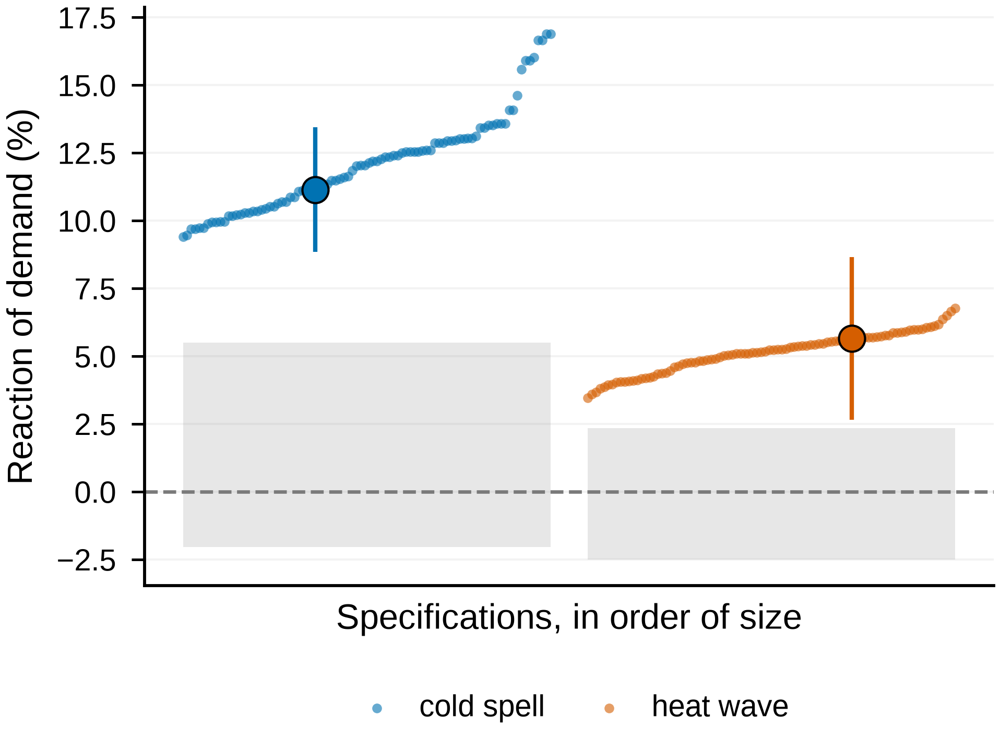
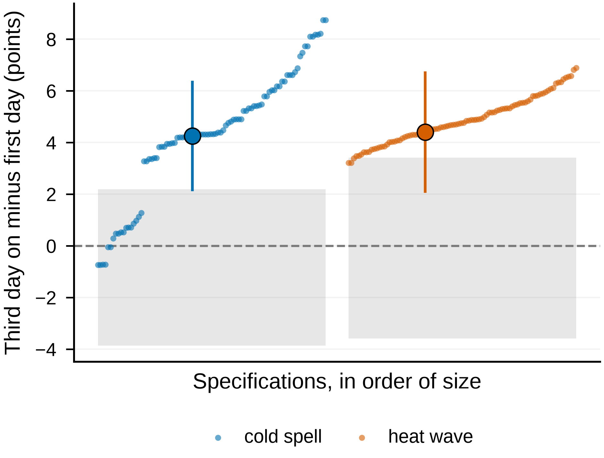
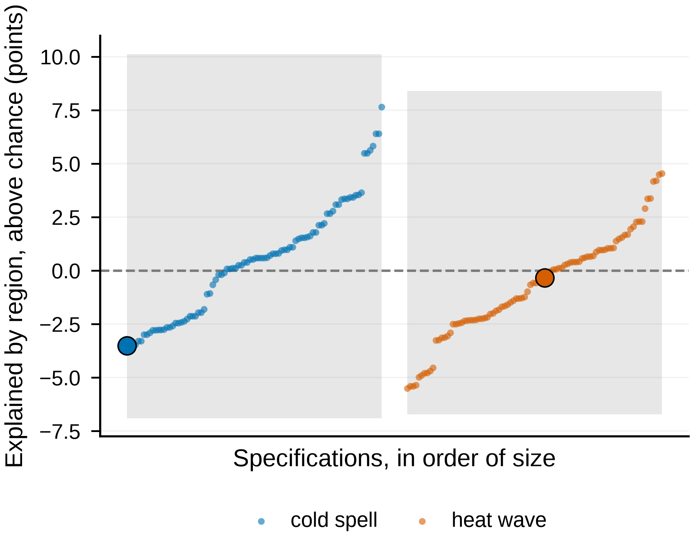
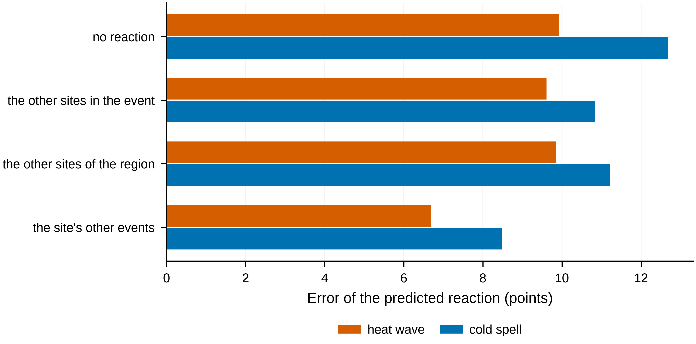
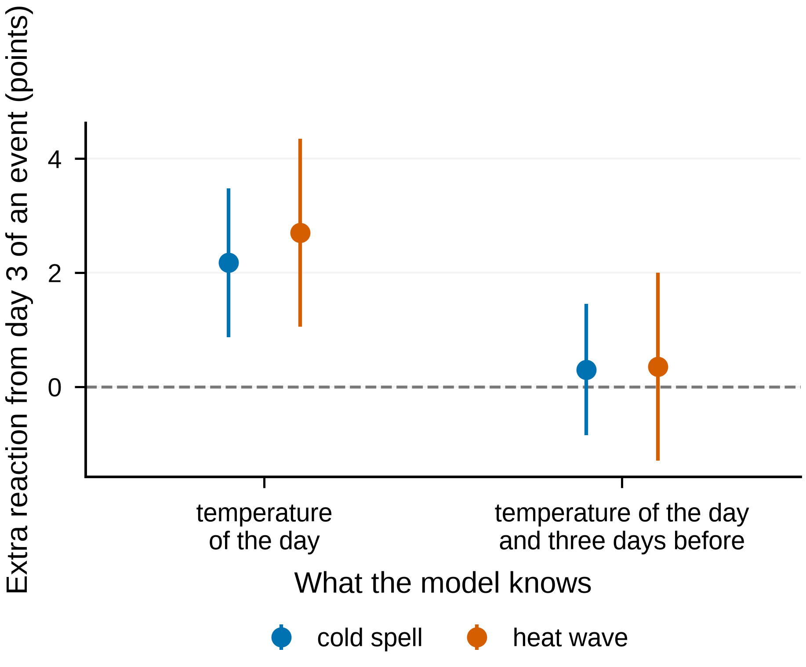
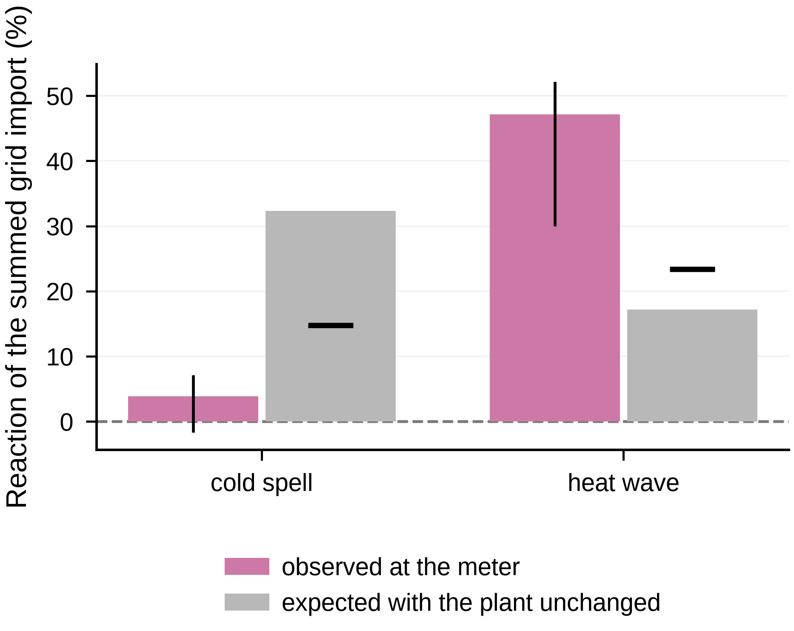
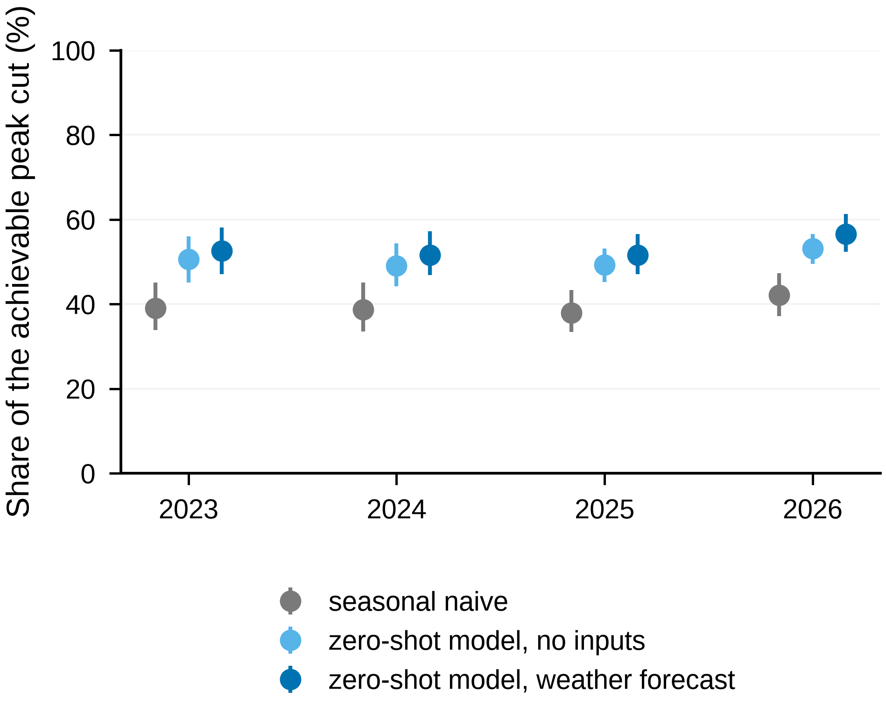
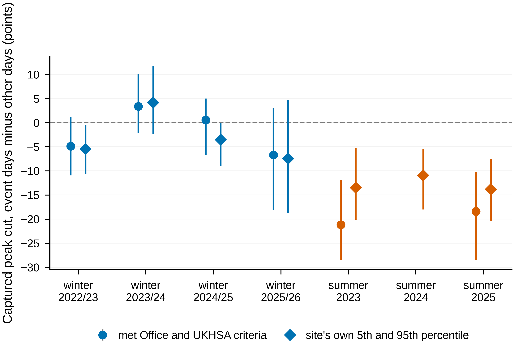
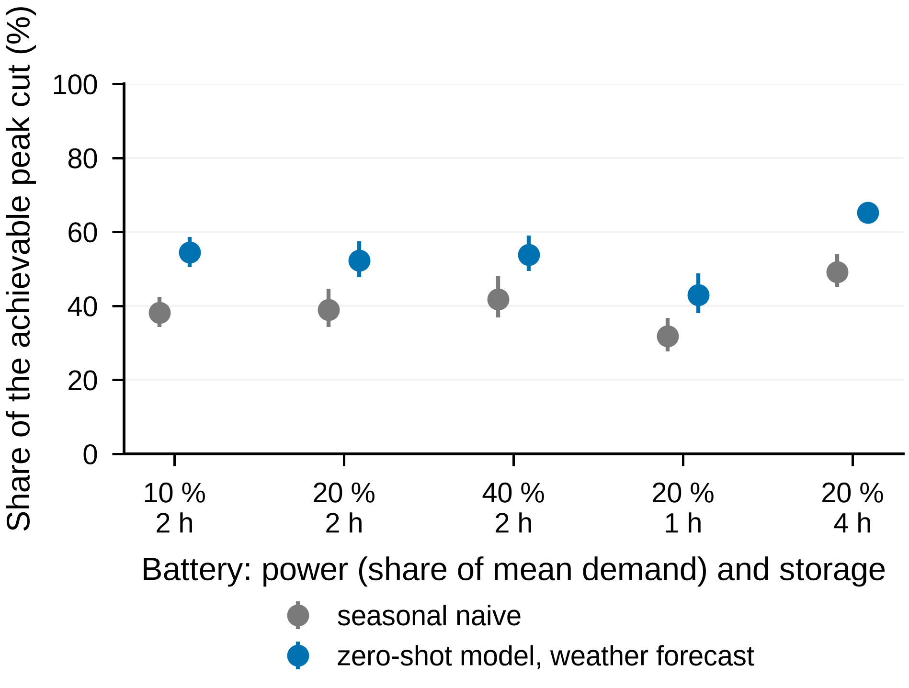

What we found so far: the findings map
16 November 2026. This page puts every result of the project under one of five questions and
gives each a grade. It is the entry point to the other pages, which were written thread by
thread in the order the questions came up. The kickoff deck (doc/kickoff_deck/) follows it
slide for slide.
The grades:
| Grade | Meaning |
|---|---|
| Solid | An interval that excludes zero, and a second, independent confirmation: another method, another period or sample, or a placebo or randomisation test. No known contradiction. |
| Indicative | The direction is supported, but by one method, one period or few sites, or the size moves with the analysis choices. |
| Open | Tested without a clear answer, or an interpretation that has not been tested. |
| Scenario | A calculation that depends on stated assumptions. Not a measurement. |
The checks behind the grades were run for this page (commands event-audit and
forecast-record; sections 6 and 7): the event findings under 90 combinations of analysis
choices and against 12 placebo runs, and the forecast findings on every day of the record
(1,201 days) in place of the 69 test days.
The five questions in short
| Question | Answer | Grade |
|---|---|---|
| 1. Can we trust the data? | 134 sites with 3.4 years of half-hourly electricity; 92 have complete meter data; the meters reproduce the annual estates returns at 65 verified sites. At sites with on-site generation the meter shows grid import only. | Solid |
| 2. What changes the demand of a site? | Temperature: +1.1 % per °C below 14 °C and +1.5 % per °C above 20 °C, carried over three days, heat in the evening. Patient activity: nothing measurable. | Solid (size of the heat effect: indicative) |
| 3. Why do sites differ? | The reaction is a stable property of the site. Region and trust explain no more than chance; the registers explain the cold reaction in part (heating fuel) and the heat reaction hardly at all. | Solid; sites with a plant indicative |
| 4. How good is a day-ahead forecast, and what is it worth? | A model with no training has 11.2 % error in every year, better than trained models. A battery that plans on it gets half of the achievable peak cut, and 40 % less on heat-wave days. Three quarters of the error sits at 12 sites with a plant. | Solid |
| 5. What changes when the estate changes? | With heat pumps for all gas heat, 13 of 31 sites exceed their grid connection. Field data a year after installation: +8 points of electricity. | Scenario; field data indicative |
1. Can we trust the data?
| Finding | Number | Evidence | Grade | |
|---|---|---|---|---|
| 1.1 | The panel | 134 sites with half-hourly electricity, 7 December 2022 to 8 May 2026; 92 with complete meter data, 42 flagged (35 with meter gaps) | coverage rule, estates_analysis.md §1 |
Solid |
| 1.2 | The meters reproduce the estates returns | annual ratio median 1.00 (quartiles 0.98 to 1.00), peak ratio 1.00 (0.95 to 1.03), at the 65 sites that verify, of 114 matched | the 65 are those within 0.65 to 1.5 of the return; the agreement inside that window is far tighter than the window | Solid |
| 1.3 | At sites with a plant the meter shows grid import only | 9.2 MW of import against 23.3 MW of implied demand at 20 sites: 40 % | arithmetic on the 2024/25 return; three unit errors found in the returns | Indicative |
| 1.4 | The temperatures are good enough | ERA5 against 76 stations: daily mean within 0.62 °C; 0.9 °C too cool on hot days; every weather effect is the same with three temperature sources | weather_and_cooling.md §6 |
Solid |
| 1.5 | Public patient-activity data stop at the trust and the month | A&E monthly for 18 of 24 trusts, beds quarterly | source survey; the daily winter reports need a manual download | Solid |
2. What changes the demand of a site?
| Finding | Number | Evidence | Grade | |
|---|---|---|---|---|
| 2.1 | Cold raises demand | +1.1 % per °C below 14 °C (0.7 to 1.5). In a cold spell, 6.7 °C colder than the reference days: +11 % (9 to 13) | fixed effects with date effects; weather reassigned between sites at random: 0 of 200 as large; three temperature sources; neighbours' weather adds nothing. Event measure: 9 to 17 % over 90 sets of choices, every interval clear of zero; 12 placebo runs give −2 to +6 % | Solid |
| 2.2 | Heat raises demand | +1.5 % per °C above 20 °C (0.2 to 2.8); +1.8 (0.5 to 3.2) with sunshine held fixed. In a heat wave: +5.7 % (2.6 to 8.7) | randomisation: 6 of 200 as large; three temperature sources give 1.4 to 2.3. Event measure: 3.5 to 6.8 % over 90 sets of choices, every interval clear of zero; placebo runs −2.5 to +2.3 % | Direction solid; size indicative |
| 2.3 | Heat acts in the afternoon and evening, cold all day | heat-wave days: +9 % from 16:00 to 22:00, +1 % from 08:00 to 12:00; cold-spell days: +9 to +13 % at every hour | three analyses agree: by block of the day (+2.4 % per °C in the afternoon, +0.3 % at night), by hour (3.3 % per °C at 16:00), and the event days. Evening minus morning: 5.9 to 9.0 points over 90 sets of choices; placebo −2.3 to +2.3 | Solid |
| 2.4 | The temperature acts over several days | per °C colder: 0.76 % today, 0.51 % from the day before, 0.11 and 0.18 from the two days before that, 1.6 % together. Per °C of daily maximum above 24 °C: 0.54, 0.72, 0.21, 0.15, 1.6 % together | fixed effects earlier: the same day and one day of carry-over. Event measure: the reaction from the third day of a heat wave is 4.4 points above the first day (2.1 to 6.8; clear in all 90 sets of choices; placebo −3.6 to +3.4) | Solid |
| 2.5 | An event is no more than its temperatures | with the temperatures of the day and of the three days before, nothing is left for "the third day of an event": heat +0.4 points (−1.3 to +2.0), cold +0.3 (−0.9 to +1.5). With the day's temperature alone: +2.7 (1.1 to 4.4) and +2.2 (0.9 to 3.5) | fixed effects earlier: no extra reaction on days of 30 °C and more (−1.5 %, −4.3 to +1.3) | Solid |
| 2.6 | Patient activity does not change electricity demand | doctor strikes: −0.4 % from 08:00 to 18:00 (−1.6 to +0.8), 34 weekdays, 132 sites. Visitors: elasticity 0.00 at three sites; a forecast that is given the true visitor count is no better (+0.006 points, −0.012 to +0.024). Occupied beds by quarter: correlation −0.04, 19 trusts | four tests with different data; placebo week next to the strikes | Solid for electricity |
| 2.7 | Sunshine lowers the import | −0.7 % per kWh/m² of daily sunshine; 44 of 83 sites | one analysis; no interval on the pooled value | Indicative |
| 2.8 | Tomorrow's heat already raises today's demand | +0.45 % per °C (−0.15 to +1.04) | anticipation, or error in the temperature of a site; not separated | Open |
Tested and rejected on the way: that the nights of the previous days make the heat build up (the day maxima of the previous days do; with night temperatures alone the third-day term stays at +2.2 points, 0.4 to 3.9); that strike days or visitor numbers mark days that are hard to forecast.
3. Why do sites differ?
| Finding | Number | Evidence | Grade | |
|---|---|---|---|---|
| 3.1 | Sites differ far beyond noise, for heat even in sign | heat slope from −3.0 to +5.4 % per °C across the middle 80 % of sites; 94 to 97 % of the spread is real; 33 sites rise with heat and 21 fall, of 83 with complete meters | standard errors corrected on 9 November (they were 1.7 to 3.2 times too small) | Solid |
| 3.2 | The reaction belongs to the site, not to the place | the region accounts for 9 % (heat) and 5 % (cold) of the differences between sites, chance gives 8 % and 7 %; trusts are at chance too; neighbours do not react alike while their weather does | region above chance in 0 % (heat) and 6 % (cold) of the 90 sets of choices, as the placebo runs | Solid |
| 3.3 | A site's past events predict its next one | error of the predicted reaction: 9.6 points from the other sites in the event, 9.9 from the other sites of the region, 6.7 from the site's own other events (heat); 10.8, 11.2 and 8.5 (cold). The site's other events explain 50 % (heat) and 67 % (cold) | 36 to 59 % and 49 to 67 % over the middle half of the 90 sets of choices; placebo runs at most 22 % | Solid |
| 3.4 | The cold reaction follows the heating fuel | a site with a standard deviation more gas per unit of electricity reacts 0.5 points per °C less (0.2 to 0.8); in cold spells 3.9 points less (1.1 to 6.6) | two measures, two samples (87 and 53 sites); a mechanism | Solid |
| 3.5 | The registers do not explain the heat reaction | estates descriptors: none of the real spread; certificate fields: 0 to 9 %; gas ratio 11 % | two measures. The site's own daily profile explains 45 % in sample and 30 to 50 % out of sample: indicative | Solid (that the registers do not) |
| 3.6 | Sites that fall on hot days are small buildings with a heating tail | 21 of 83 sites with 8 % of the demand; they fall as much with warm nights as with hot afternoons | the mechanism is a reading | Indicative |
| 3.7 | At sites with a plant, the meter multiplies every change in demand | import in heat waves +25 % (9 to 42) against +6 % elsewhere, 12 sites. The plant supplies about 70 % of the demand, so a demand reaction like that of the other sites, with the plant unchanged, gives +17 to +23 % at the meter | 14 to 31 % over 90 sets of choices, but placebo runs reach +18 %. Earlier pages: +32 % on days of 24 °C and more (23 sites), +12 % in the 2025 heat waves (17 sites) | Direction solid; size and mechanism indicative |
| 3.8 | In cold spells the plants give more output; in heat waves a change is not established | cold: import +4 % where +15 to +32 % is expected with the plant unchanged, so output +5 to +18 % at the six plants that follow heat. Heat: output −3 to −7 % at those plants (−15 to +6) | output is the yearly mean of the estates return, not a measurement; two assumptions for the demand reaction | Indicative |
| 3.9 | Three shapes of the day; the use of a site sets its shape | 64 flat sites, 44 moderate, 21 office-like, 2 night-heavy | descriptive; the number of groups is a judgement | Indicative |
4. How good is a day-ahead forecast, and what is it worth?
| Finding | Number | Evidence | Grade | |
|---|---|---|---|---|
| 4.1 | A model with no training beats the trained models | 11.5 % error against 13.0 % for the gradient-boosted model (−1.5 points, −1.9 to −1.1), 13.7 % for a neural process trained on the panel and 18.4 % for the same day last week, on the 69 test days | on every day of the record: 11.2 % (10.0 to 12.3), and 11.0 to 11.5 % in the four years, against 17.7 % for the same day last week | Solid |
| 4.2 | Calendar, price and the weather forecast add 0.7 points; the weather forecast is as good as the observed weather | −0.65 points (−1.07 to −0.38); forecast against observed weather +0.05 (0.01 to 0.08) | whole record: 11.2 % against 11.8 % without inputs | Solid |
| 4.3 | The error sits at the sites with a plant | 78 % of the error at 12 sites with 48 % of the metered demand, in every year (73 to 79 %); three sites hold 55 % | half of it is their size; days with a step larger than the site's mean import are 1.5 % of site-days and hold 37 % of the error | Solid |
| 4.4 | A battery that plans on the forecast gets half of the achievable peak cut | 52 % (48 to 58) on the whole record, 52 to 57 % in the four years; same day last week: 39 % | depends on the storage: 43 % with one hour, 65 % with four; not on the power | Solid for a two-hour battery |
| 4.5 | Heat-wave days cost value, not accuracy | captured peak cut 27 % on heat-wave days against 45 % on the other days of the same site and month (−18.4 points, −27.7 to −10.0); error 12.1 % against 11.8 % (0.4 points, −0.5 to 1.3) | summer 2023: −21.2 points, −28.5 to −11.8; summer 2025: −18.4 points, −28.5 to −10.3; with the site's own percentiles: −13.0 points, −18.8 to −8.1; with each of five batteries the heat-wave days keep 57 to 70 % of what the other days get | Solid |
| 4.6 | Cold spells do not clearly cost value | captured peak cut 55 % on cold-spell days against 57 % on the other days of the same site and month (−1.1 points, −4.3 to 1.8); clear in 0 of 4 winters | the earlier figure (44 % against 53 %) came from the one winter of the test year | Withdrawn |
| 4.7 | Knowing that a site has a plant does not help; knowing when it runs would | a flag: +0.02 points (−0.18 to +0.21). The state of the plant on the target day: 16.5 to 12.5 % at the plant sites | the state signal is made from the import itself: an upper bound | Indicative |
| 4.8 | Visitor counts add nothing to the forecast | +0.006 points (−0.012 to +0.024) | two sites; agrees with 2.6 | Indicative |
| 4.9 | Coherent forecasts across meters, sites and trusts improve the national total | 8.0 to 6.8 % | no interval; 61 test days | Indicative |
| 4.10 | A published method for heat and cold waves (Lu et al. 2026) is level with the zero-shot model | 11 % behind in Europe, 6.5 % ahead in PJM | the paper's own public data; one seed | Indicative |
5. What changes when the estate changes?
| Finding | Number | Evidence | Grade | |
|---|---|---|---|---|
| 5.1 | Heat pumps for all gas heat put sites above their grid connection | 13 of 31 panel sites; 48 % of 631 sites in England | assumes all gas heat replaced, a seasonal performance factor of 2.55, boiler efficiency 0.85 | Scenario |
| 5.2 | The choice of winter hardly matters | 10 to 15 of 31 sites in the last 30 winters, 14 in a one-in-twenty winter, 19 in 1962/63 | 66 weather years on the same scenario | Scenario |
| 5.3 | A year after heat pumps, sites use more electricity | +8.3 points (3.5 to 14.6), 23 sites; gas −9.4 points (−21 to +7, not clear); performance factor 2.8 at 13 clean switches (1.3 to 7.4) | estates returns, coarse; the field suggests that about a tenth of the gas is replaced, not all of it | Indicative |
| 5.4 | Hospitals use rooftop solar themselves | all of it up to 1 kWp per kW of mean demand | assumed performance ratio | Scenario |
| 5.5 | A battery earns £23 per kWh a year on wholesale prices | £88 to £96 on an Agile-type tariff | perfect price foresight, no degradation | Scenario |
| 5.6 | Warming lowers annual electricity | −1.2 % at +4 °C | uniform shift, fixed response | Scenario |
| 5.7 | LED lighting saves electricity | −0.6 % per ten points of LED share (−1.2 to 0.0) | p = 0.05, 59 sites | Open |
| 5.8 | Solar and heat-pump installations show at the meter | 3 of the 4 sites with reported solar | 8 downward breaks among 107 sites, and upward ones as large | Indicative |
6. The audit of the event findings
event-audit (analysis/event_audit.py, tables in code/reports/event_audit/).
Ninety sets of choices. Five sets of reference weeks, three definitions of an event (the catalogue, heat thresholds one degree lower, the site's own 5th and 95th percentiles), three site samples (complete meters, all 134 sites, the 91 forecast sites), holidays in or out. Twelve placebo runs. The catalogue's events moved by five to eight weeks and by one and two years; a reaction on those days is a fault of the measure or chance.

specification_curve_reaction PDF
specification_curve_build_up PDF
specification_curve_evening PDF
specification_curve_plant PDF
specification_curve_region PDF
specification_curve_own_events PDF| metric | type | baseline | baseline_lo | baseline_hi | specifications | min | median | max | same_sign_share | interval_excludes_zero_share | placebo_n | placebo_min | placebo_mean | placebo_max | placebo_as_large |
|---|---|---|---|---|---|---|---|---|---|---|---|---|---|---|---|
| build-up per degree | cold spell | 0.42 | 0.1 | 0.73 | 90 | -0.26 | 0.42 | 0.84 | 0.92 | 0.7 | 0 | ||||
| build-up per degree | heatwave | 0.44 | 0.17 | 0.72 | 90 | 0.28 | 0.58 | 0.82 | 1 | 0.98 | 0 | ||||
| degrees, no plant | cold spell | 6.72 | 6.58 | 6.85 | 90 | 6.04 | 6.81 | 7.82 | 1 | 1 | 12 | -0.71 | 0.51 | 1.79 | 0 |
| degrees, no plant | heatwave | 7.97 | 7.8 | 8.14 | 90 | 5.72 | 7 | 8.51 | 1 | 1 | 12 | -1.95 | -0.04 | 0.69 | 0 |
| evening minus morning | cold spell | -0.97 | 90 | -4.69 | -1.14 | -0.02 | 1 | 12 | -1.75 | -0.48 | 0.93 | 3 | |||
| evening minus morning | heatwave | 8.35 | 90 | 5.87 | 7.8 | 9.02 | 1 | 12 | -2.32 | 0.05 | 2.3 | 0 | |||
| event days, no plant | cold spell | 2553 | 90 | 1113 | 3152 | 4542 | 1 | 12 | 692 | 2307.92 | 3711 | 5 | |||
| event days, no plant | heatwave | 782 | 90 | 771 | 1640 | 3491 | 1 | 12 | 332 | 652.25 | 792 | 4 | |||
| other events r2 | cold spell | 67.22 | 90 | 14.04 | 58.93 | 77.33 | 1 | 12 | 0.01 | 7.72 | 21.61 | 0 | |||
| other events r2 | heatwave | 49.78 | 90 | 0.03 | 50.44 | 74.96 | 1 | 12 | 0.25 | 5.26 | 19.02 | 0 | |||
| plant minus no plant | cold spell | -3.36 | -11.97 | 5.26 | 90 | -11.56 | -3.93 | 3.45 | 0.98 | 0.06 | 12 | -1.19 | 3.96 | 12.5 | 5 |
| plant minus no plant | heatwave | 19.5 | 4.49 | 34.5 | 90 | 9.99 | 17.57 | 25.07 | 1 | 1 | 12 | -5.13 | 3.8 | 17.09 | 0 |
| reaction, no plant | cold spell | 11.14 | 8.85 | 13.43 | 90 | 9.4 | 12.09 | 16.89 | 1 | 1 | 12 | -2.04 | 2.13 | 5.5 | 0 |
| reaction, no plant | heatwave | 5.65 | 2.64 | 8.65 | 90 | 3.46 | 5.24 | 6.77 | 1 | 1 | 12 | -2.5 | 0.27 | 2.34 | 0 |
| reaction, plant | cold spell | 7.79 | -1.46 | 17.03 | 90 | 0.84 | 8.08 | 18.06 | 1 | 0.34 | 12 | -1.32 | 6.1 | 15.79 | 3 |
| reaction, plant | heatwave | 25.14 | 8.62 | 41.67 | 90 | 14.11 | 22.86 | 31.06 | 1 | 1 | 12 | -4.28 | 4.07 | 18.5 | 0 |
| region p | cold spell | 0.78 | 90 | 0.02 | 0.38 | 0.83 | 1 | 12 | 0.05 | 0.5 | 0.97 | 3 | |||
| region p | heatwave | 0.46 | 90 | 0.13 | 0.48 | 0.96 | 1 | 12 | 0.1 | 0.49 | 0.94 | 5 | |||
| region share minus chance | cold spell | -3.51 | 90 | -3.51 | 0.55 | 7.65 | 0.39 | 12 | -6.9 | -0.27 | 10.12 | 7 | |||
| region share minus chance | heatwave | -0.34 | 90 | -5.49 | -0.57 | 4.55 | 0.57 | 12 | -6.71 | -0.28 | 8.39 | 11 | |||
| third day on minus first day | cold spell | 4.26 | 2.12 | 6.39 | 90 | -0.74 | 4.32 | 8.74 | 0.93 | 0.8 | 12 | -3.86 | -1.08 | 2.19 | 0 |
| third day on minus first day | heatwave | 4.4 | 2.06 | 6.75 | 90 | 3.21 | 4.76 | 6.89 | 1 | 1 | 12 | -3.59 | 0.04 | 3.41 | 0 |
source: code/reports/event_audit/grid_summary.csv (22 rows shown)
Does a site's past predict its next event? Each site's reaction in each national event, predicted without that event (and without that site, for the means of other sites).

prediction PDF| type | sites | predictor | site_events | n_sites | mae_pts | median_ae_pts | r2_against_event_mean |
|---|---|---|---|---|---|---|---|
| cold spell | no on-site generation | no reaction | 662 | 75 | 12.69 | 8.28 | -0.42 |
| cold spell | no on-site generation | the other sites in the event | 662 | 75 | 10.84 | 8.03 | 0 |
| cold spell | no on-site generation | the other sites of the region | 662 | 75 | 11.21 | 8.19 | -0.08 |
| cold spell | no on-site generation | the site's other events | 662 | 75 | 8.49 | 5.15 | 0.19 |
| cold spell | no on-site generation | other sites and the site's other events | 662 | 75 | 8.48 | 5.39 | 0.19 |
| cold spell | on-site generation | no reaction | 113 | 13 | 17.27 | 6.95 | 0.19 |
| cold spell | on-site generation | the other sites in the event | 113 | 13 | 21.64 | 12.09 | 0 |
| cold spell | on-site generation | the other sites of the region | 113 | 13 | 23.24 | 11.21 | -0.07 |
| cold spell | on-site generation | the site's other events | 113 | 13 | 16.83 | 8.22 | 0.16 |
| cold spell | on-site generation | other sites and the site's other events | 113 | 13 | 22.1 | 11.55 | -0.06 |
| heatwave | no on-site generation | no reaction | 175 | 50 | 9.92 | 7.7 | -0.09 |
| heatwave | no on-site generation | the other sites in the event | 175 | 50 | 9.61 | 7.29 | 0 |
| heatwave | no on-site generation | the other sites of the region | 175 | 50 | 9.85 | 7.34 | -0.08 |
| heatwave | no on-site generation | the site's other events | 175 | 50 | 6.7 | 4.5 | 0.44 |
| heatwave | no on-site generation | other sites and the site's other events | 175 | 50 | 6.99 | 5.24 | 0.41 |
| heatwave | on-site generation | no reaction | 45 | 12 | 25.71 | 16.35 | -0.29 |
| heatwave | on-site generation | the other sites in the event | 45 | 12 | 24.16 | 18.86 | 0 |
| heatwave | on-site generation | the other sites of the region | 45 | 12 | 24.41 | 21.15 | -0.02 |
| heatwave | on-site generation | the site's other events | 45 | 12 | 16.3 | 8.57 | 0.33 |
| heatwave | on-site generation | other sites and the site's other events | 45 | 12 | 20.77 | 14.17 | 0.17 |
source: code/reports/event_audit/prediction_scores.csv (20 rows shown)
The region is a worse guide than the national mean of the event. The site's own other events cut the error by a fifth (cold) to a third (heat). "Two events are sufficient", a hypothesis of the earlier deck, is not supported: in date order the error keeps falling up to the fifth earlier event (12.1 to 10.0 points for cold spells on the same later events).
| type | sites | earlier_events_used | site_events | mae_pts | mae_same_events_pts | same_events |
|---|---|---|---|---|---|---|
| cold spell | no on-site generation | 0 | 662 | 10.84 | 12.05 | 305 |
| cold spell | no on-site generation | 1 | 587 | 10.72 | 12.3 | 305 |
| cold spell | no on-site generation | 2 | 512 | 10.41 | 11.42 | 305 |
| cold spell | no on-site generation | 3 | 437 | 9.68 | 10.67 | 305 |
| cold spell | no on-site generation | 4 | 371 | 9.44 | 10.24 | 305 |
| cold spell | no on-site generation | 5 | 305 | 10.04 | 10.04 | 305 |
| cold spell | on-site generation | 0 | 113 | 21.64 | 32.52 | 48 |
| cold spell | on-site generation | 1 | 100 | 24.18 | 34.66 | 48 |
| cold spell | on-site generation | 2 | 87 | 25.98 | 34.65 | 48 |
| cold spell | on-site generation | 3 | 74 | 26.76 | 33.26 | 48 |
| cold spell | on-site generation | 4 | 61 | 28.67 | 32.6 | 48 |
| cold spell | on-site generation | 5 | 48 | 33.54 | 33.54 | 48 |
| heatwave | no on-site generation | 0 | 189 | 9.88 | 9 | |
| heatwave | no on-site generation | 1 | 125 | 8.3 | 9 | |
| heatwave | no on-site generation | 2 | 75 | 8.68 | 9 | |
| heatwave | no on-site generation | 3 | 38 | 7.76 | 9 | |
| heatwave | no on-site generation | 4 | 20 | 8.99 | 9 | |
| heatwave | no on-site generation | 5 | 9 | 8.67 | 9 | |
| heatwave | on-site generation | 0 | 45 | 24.16 | 4 | |
| heatwave | on-site generation | 1 | 33 | 25.35 | 4 | |
| heatwave | on-site generation | 2 | 21 | 18.49 | 4 | |
| heatwave | on-site generation | 3 | 13 | 15.24 | 4 | |
| heatwave | on-site generation | 4 | 8 | 14.53 | 4 | |
| heatwave | on-site generation | 5 | 4 | 11.82 | 4 |
source: code/reports/event_audit/prediction_curve.csv (24 rows shown)
Is an event more than its temperatures? The daily reaction of the sites without on-site generation on the temperature of the day and of the three days before, each as a difference from the reference days; cold season on degrees of daily mean, warm season on degrees of daily maximum above 24 °C (heat acts above a threshold: the plain difference in the daily maximum explains nothing in the warm season).

lag_weights PDF
event_term PDFTable: 84 rows
| season | model | event_terms | term | coef | lo | hi | r2 | site_days | sites |
|---|---|---|---|---|---|---|---|---|---|
| heat | the day's temperature | False | d_hot_0 | 1.1 | 0.35 | 1.85 | 0.01 | 33784 | 77 |
| heat | the day's temperature | True | d_hot_0 | 1.04 | 0.19 | 1.88 | 0.01 | 33784 | 77 |
| heat | the day's temperature | True | in_event | -0.67 | -3.15 | 1.81 | 0.01 | 33784 | 77 |
| heat | the day's temperature | True | late | 2.7 | 1.06 | 4.35 | 0.01 | 33784 | 77 |
| heat | the day and three days before | False | d_hot_0 | 0.54 | -0.14 | 1.21 | 0.01 | 33784 | 77 |
| heat | the day and three days before | False | d_hot_1 | 0.72 | 0.37 | 1.07 | 0.01 | 33784 | 77 |
| heat | the day and three days before | False | d_hot_2 | 0.21 | -0.02 | 0.43 | 0.01 | 33784 | 77 |
| heat | the day and three days before | False | d_hot_3 | 0.15 | -0.08 | 0.39 | 0.01 | 33784 | 77 |
| heat | the day and three days before | True | d_hot_0 | 0.56 | -0.2 | 1.33 | 0.01 | 33784 | 77 |
| heat | the day and three days before | True | d_hot_1 | 0.73 | 0.37 | 1.09 | 0.01 | 33784 | 77 |
| heat | the day and three days before | True | d_hot_2 | 0.2 | -0.03 | 0.44 | 0.01 | 33784 | 77 |
| heat | the day and three days before | True | d_hot_3 | 0.15 | -0.08 | 0.38 | 0.01 | 33784 | 77 |
| heat | the day and three days before | True | in_event | -0.58 | -2.94 | 1.79 | 0.01 | 33784 | 77 |
| heat | the day and three days before | True | late | 0.35 | -1.3 | 2 | 0.01 | 33784 | 77 |
| heat | night temperature, day and three days before | False | d_warm_night_0 | 0.76 | 0.42 | 1.1 | 0.01 | 33784 | 77 |
| heat | night temperature, day and three days before | False | d_warm_night_1 | -0.02 | -0.23 | 0.2 | 0.01 | 33784 | 77 |
| heat | night temperature, day and three days before | False | d_warm_night_2 | 0.03 | -0.14 | 0.19 | 0.01 | 33784 | 77 |
| heat | night temperature, day and three days before | False | d_warm_night_3 | 0.04 | -0.13 | 0.21 | 0.01 | 33784 | 77 |
| heat | night temperature, day and three days before | True | d_warm_night_0 | 0.69 | 0.37 | 1.01 | 0.01 | 33784 | 77 |
| heat | night temperature, day and three days before | True | d_warm_night_1 | -0.05 | -0.26 | 0.16 | 0.01 | 33784 | 77 |
| heat | night temperature, day and three days before | True | d_warm_night_2 | 0.02 | -0.15 | 0.18 | 0.01 | 33784 | 77 |
| heat | night temperature, day and three days before | True | d_warm_night_3 | 0.05 | -0.11 | 0.22 | 0.01 | 33784 | 77 |
| heat | night temperature, day and three days before | True | in_event | 2.31 | -0.03 | 4.66 | 0.01 | 33784 | 77 |
| heat | night temperature, day and three days before | True | late | 2.17 | 0.42 | 3.91 | 0.01 | 33784 | 77 |
| heat | both | False | d_hot_0 | 0.4 | -0.29 | 1.09 | 0.02 | 33784 | 77 |
| heat | both | False | d_hot_1 | 0.58 | 0.25 | 0.9 | 0.02 | 33784 | 77 |
| heat | both | False | d_hot_2 | 0.31 | 0.08 | 0.53 | 0.02 | 33784 | 77 |
| heat | both | False | d_hot_3 | 0.14 | -0.07 | 0.36 | 0.02 | 33784 | 77 |
| heat | both | False | d_warm_night_0 | 0.49 | 0.19 | 0.79 | 0.02 | 33784 | 77 |
| heat | both | False | d_warm_night_1 | -0.19 | -0.37 | 0 | 0.02 | 33784 | 77 |
| heat | both | False | d_warm_night_2 | -0.08 | -0.24 | 0.09 | 0.02 | 33784 | 77 |
| heat | both | False | d_warm_night_3 | 0.03 | -0.13 | 0.2 | 0.02 | 33784 | 77 |
| heat | both | True | d_hot_0 | 0.42 | -0.36 | 1.21 | 0.02 | 33784 | 77 |
| heat | both | True | d_hot_1 | 0.58 | 0.25 | 0.92 | 0.02 | 33784 | 77 |
| heat | both | True | d_hot_2 | 0.31 | 0.07 | 0.54 | 0.02 | 33784 | 77 |
| heat | both | True | d_hot_3 | 0.14 | -0.07 | 0.36 | 0.02 | 33784 | 77 |
| heat | both | True | d_warm_night_0 | 0.49 | 0.19 | 0.79 | 0.02 | 33784 | 77 |
| heat | both | True | d_warm_night_1 | -0.19 | -0.38 | 0 | 0.02 | 33784 | 77 |
| heat | both | True | d_warm_night_2 | -0.08 | -0.24 | 0.09 | 0.02 | 33784 | 77 |
| heat | both | True | d_warm_night_3 | 0.03 | -0.13 | 0.2 | 0.02 | 33784 | 77 |
| heat | both | True | in_event | -0.48 | -2.87 | 1.9 | 0.02 | 33784 | 77 |
| heat | both | True | late | 0.23 | -1.38 | 1.85 | 0.02 | 33784 | 77 |
| cold | the day's temperature | False | d_t_mean_0 | -1.22 | -1.5 | -0.94 | 0.1 | 36020 | 77 |
| cold | the day's temperature | True | d_t_mean_0 | -1.16 | -1.44 | -0.87 | 0.1 | 36020 | 77 |
| cold | the day's temperature | True | in_event | 0.68 | -0.51 | 1.88 | 0.1 | 36020 | 77 |
| cold | the day's temperature | True | late | 2.17 | 0.87 | 3.48 | 0.1 | 36020 | 77 |
| cold | the day and three days before | False | d_t_mean_0 | -0.76 | -0.98 | -0.53 | 0.11 | 36020 | 77 |
| cold | the day and three days before | False | d_t_mean_1 | -0.51 | -0.65 | -0.37 | 0.11 | 36020 | 77 |
| cold | the day and three days before | False | d_t_mean_2 | -0.11 | -0.22 | 0.01 | 0.11 | 36020 | 77 |
| cold | the day and three days before | False | d_t_mean_3 | -0.18 | -0.27 | -0.09 | 0.11 | 36020 | 77 |
| cold | the day and three days before | True | d_t_mean_0 | -0.74 | -0.98 | -0.51 | 0.11 | 36020 | 77 |
| cold | the day and three days before | True | d_t_mean_1 | -0.51 | -0.65 | -0.37 | 0.11 | 36020 | 77 |
| cold | the day and three days before | True | d_t_mean_2 | -0.1 | -0.22 | 0.01 | 0.11 | 36020 | 77 |
| cold | the day and three days before | True | d_t_mean_3 | -0.18 | -0.27 | -0.09 | 0.11 | 36020 | 77 |
| cold | the day and three days before | True | in_event | 0.29 | -0.85 | 1.43 | 0.11 | 36020 | 77 |
| cold | the day and three days before | True | late | 0.3 | -0.85 | 1.46 | 0.11 | 36020 | 77 |
| cold | night temperature, day and three days before | False | d_t_min_0 | -0.64 | -0.86 | -0.43 | 0.09 | 36020 | 77 |
| cold | night temperature, day and three days before | False | d_t_min_1 | -0.39 | -0.51 | -0.28 | 0.09 | 36020 | 77 |
| cold | night temperature, day and three days before | False | d_t_min_2 | -0.1 | -0.2 | 0 | 0.09 | 36020 | 77 |
| cold | night temperature, day and three days before | False | d_t_min_3 | -0.13 | -0.22 | -0.04 | 0.09 | 36020 | 77 |
| cold | night temperature, day and three days before | True | d_t_min_0 | -0.59 | -0.8 | -0.37 | 0.09 | 36020 | 77 |
| cold | night temperature, day and three days before | True | d_t_min_1 | -0.38 | -0.49 | -0.26 | 0.09 | 36020 | 77 |
| cold | night temperature, day and three days before | True | d_t_min_2 | -0.09 | -0.19 | 0.02 | 0.09 | 36020 | 77 |
| cold | night temperature, day and three days before | True | d_t_min_3 | -0.12 | -0.21 | -0.03 | 0.09 | 36020 | 77 |
| cold | night temperature, day and three days before | True | in_event | 2.12 | 0.87 | 3.36 | 0.09 | 36020 | 77 |
| cold | night temperature, day and three days before | True | late | 0.82 | -0.44 | 2.09 | 0.09 | 36020 | 77 |
| cold | both | False | d_t_mean_0 | -0.98 | -1.21 | -0.76 | 0.12 | 36020 | 77 |
| cold | both | False | d_t_mean_1 | -0.65 | -0.88 | -0.43 | 0.12 | 36020 | 77 |
| cold | both | False | d_t_mean_2 | -0.24 | -0.43 | -0.05 | 0.12 | 36020 | 77 |
| cold | both | False | d_t_mean_3 | -0.27 | -0.44 | -0.09 | 0.12 | 36020 | 77 |
| cold | both | False | d_t_min_0 | 0.25 | 0.05 | 0.45 | 0.12 | 36020 | 77 |
| cold | both | False | d_t_min_1 | 0.12 | -0.05 | 0.28 | 0.12 | 36020 | 77 |
| cold | both | False | d_t_min_2 | 0.13 | -0.01 | 0.26 | 0.12 | 36020 | 77 |
| cold | both | False | d_t_min_3 | 0.06 | -0.07 | 0.2 | 0.12 | 36020 | 77 |
| cold | both | True | d_t_mean_0 | -0.97 | -1.21 | -0.74 | 0.12 | 36020 | 77 |
| cold | both | True | d_t_mean_1 | -0.65 | -0.87 | -0.43 | 0.12 | 36020 | 77 |
| cold | both | True | d_t_mean_2 | -0.24 | -0.43 | -0.04 | 0.12 | 36020 | 77 |
| cold | both | True | d_t_mean_3 | -0.27 | -0.45 | -0.09 | 0.12 | 36020 | 77 |
| cold | both | True | d_t_min_0 | 0.25 | 0.05 | 0.45 | 0.12 | 36020 | 77 |
| cold | both | True | d_t_min_1 | 0.11 | -0.05 | 0.28 | 0.12 | 36020 | 77 |
| cold | both | True | d_t_min_2 | 0.13 | -0.01 | 0.26 | 0.12 | 36020 | 77 |
| cold | both | True | d_t_min_3 | 0.06 | -0.07 | 0.2 | 0.12 | 36020 | 77 |
| cold | both | True | in_event | 0.21 | -0.9 | 1.32 | 0.12 | 36020 | 77 |
| cold | both | True | late | 0.21 | -0.97 | 1.38 | 0.12 | 36020 | 77 |
source: code/reports/event_audit/lag_models.csv (84 rows shown)
What the plant does. The observed reaction of the import against the reaction that the import would show if the site's demand reacted like that of the sites without a plant and the plant did not change. Plant output is the rated power times the capacity factor of the estates return.

plant_decomposition PDF| type | assumption | demand_reaction_assumed_pct | sites | n | plant_share_of_demand | import_reaction_summed_pct | import_reaction_without_one_site_min_pct | import_reaction_without_one_site_max_pct | import_reaction_if_plant_unchanged_pct | implied_output_change_pct | lo | hi | without_one_site_min_pct | without_one_site_max_pct | sites_with_lower_output |
|---|---|---|---|---|---|---|---|---|---|---|---|---|---|---|---|
| cold spell | like all sites without a plant | 11.1 | all sites with a plant | 9 | 0.7 | 3.9 | -1.7 | 7.1 | 32.4 | 15.3 | 8.8 | 20.3 | 14.1 | 18.3 | 1 |
| cold spell | like all sites without a plant | 11.1 | other plants | 3 | 0.7 | 13.4 | 0.2 | 26.7 | 29.5 | 10.4 | -0.2 | 22 | 3.2 | 21.1 | 1 |
| cold spell | like all sites without a plant | 11.1 | plant follows heat | 6 | 0.7 | -2.5 | -4.1 | 0.9 | 34.1 | 17.6 | 15.1 | 22.9 | 16.9 | 19.1 | 0 |
| cold spell | like the acute sites without a plant | 4.8 | all sites with a plant | 9 | 0.7 | 3.9 | -1.7 | 7.1 | 14.8 | 5.3 | -1.2 | 9.2 | 3.6 | 8.1 | 2 |
| cold spell | like the acute sites without a plant | 4.8 | other plants | 3 | 0.7 | 13.4 | 0.2 | 26.7 | 13.4 | 0 | -8.8 | 10.8 | -6.8 | 8.7 | 1 |
| cold spell | like the acute sites without a plant | 4.8 | plant follows heat | 6 | 0.7 | -2.5 | -4.1 | 0.9 | 15.6 | 7.9 | 6.1 | 9.4 | 7 | 8.7 | 1 |
| heatwave | like all sites without a plant | 5.6 | all sites with a plant | 8 | 0.7 | 47.1 | 30 | 52.2 | 17.2 | -18.6 | -54.1 | -1.4 | -24.3 | -6 | 7 |
| heatwave | like all sites without a plant | 5.6 | other plants | 3 | 0.6 | 60.9 | 22 | 77.3 | 14.2 | -42.2 | -102.5 | -3.1 | -79.8 | -4.3 | 3 |
| heatwave | like all sites without a plant | 5.6 | plant follows heat | 5 | 0.7 | 33.5 | 24.2 | 37.3 | 19.7 | -6.5 | -14.5 | 4 | -11.5 | -2.5 | 4 |
| heatwave | like the acute sites without a plant | 7.8 | all sites with a plant | 8 | 0.7 | 47.1 | 30 | 52.2 | 23.4 | -15.2 | -49.3 | 1.8 | -20.7 | -2.7 | 6 |
| heatwave | like the acute sites without a plant | 7.8 | other plants | 3 | 0.6 | 60.9 | 22 | 77.3 | 19.4 | -38.4 | -98.4 | 3.2 | -75.2 | -0.7 | 2 |
| heatwave | like the acute sites without a plant | 7.8 | plant follows heat | 5 | 0.7 | 33.5 | 24.2 | 37.3 | 26.7 | -3.3 | -10.2 | 6.2 | -8 | 0.7 | 4 |
source: code/reports/event_audit/plant_decomposition.csv (12 rows shown)
7. The forecast on the whole record
forecast-probes --which record and forecast-record (analysis/forecast_record.py, tables
in code/reports/forecast_record/). Chronos-2, zero-shot, for every day from 18 January 2023 to
8 May 2026 at the 91 forecast sites, on a GPU: without inputs, and with calendar, price,
national forecasts and the weather forecast of the day before. A site-day counts if all 48
half-hours are observed and at least 80 % of the six weeks before it.

record_error_years PDF
record_value_years PDF| window | model | sites | site_days | days | nmae_pct | nmae_lo | nmae_hi | naive_nmae_pct | captured_point_pct | captured_lo | captured_hi | captured_q70_pct | plant_error_share_pct | top3_error_share_pct | plant_large_step_day_share_pct | plant_large_step_error_share_pct |
|---|---|---|---|---|---|---|---|---|---|---|---|---|---|---|---|---|
| whole record | chronos2 | 91 | 103786 | 1201 | 11.8 | 10.6 | 13 | 17.7 | 50 | 45.4 | 54.5 | 52.3 | 76.8 | 54.4 | 1.5 | 35.2 |
| whole record | chronos2_ifs | 91 | 103786 | 1201 | 11.2 | 10 | 12.3 | 17.7 | 52.4 | 47.7 | 57.5 | 54.9 | 77.7 | 55.4 | 1.5 | 36.7 |
| whole record | seasonal_naive | 91 | 103787 | 1202 | 17.7 | 15.7 | 19.8 | 17.7 | 38.9 | 34.2 | 44.6 | 81.9 | 58.6 | 1.5 | 28.5 | |
| 2023 | chronos2 | 91 | 28686 | 346 | 11.5 | 10.3 | 12.7 | 17 | 50.7 | 45.1 | 56 | 52.1 | 76.5 | 55.3 | 1.3 | 31 |
| 2023 | chronos2_ifs | 91 | 28686 | 346 | 11 | 9.8 | 12.3 | 17 | 52.6 | 47.1 | 58.1 | 54.8 | 77 | 55.4 | 1.3 | 32.7 |
| 2023 | seasonal_naive | 91 | 28687 | 347 | 17 | 15 | 19.3 | 17 | 39 | 33.9 | 45 | 81.6 | 59.7 | 1.3 | 26.6 | |
| 2024 | chronos2 | 91 | 32499 | 364 | 11.9 | 10.6 | 13.2 | 17.7 | 49 | 44.2 | 54.3 | 51.7 | 77.1 | 55.8 | 1.6 | 35.7 |
| 2024 | chronos2_ifs | 91 | 32499 | 364 | 11.2 | 10 | 12.5 | 17.7 | 51.6 | 46.8 | 57.2 | 54.3 | 78 | 56.9 | 1.6 | 37.3 |
| 2024 | seasonal_naive | 91 | 32499 | 364 | 17.7 | 15.6 | 19.9 | 17.7 | 38.7 | 33.5 | 45.1 | 81.2 | 57.5 | 1.6 | 28.5 | |
| 2025 | chronos2 | 91 | 31649 | 364 | 12.2 | 10.9 | 13.5 | 18.7 | 49.2 | 45.2 | 53.1 | 51.6 | 78.4 | 56.3 | 1.7 | 38.5 |
| 2025 | chronos2_ifs | 91 | 31649 | 364 | 11.5 | 10.3 | 12.7 | 18.7 | 51.6 | 47.1 | 56.6 | 54.2 | 79.2 | 57.2 | 1.7 | 39.8 |
| 2025 | seasonal_naive | 91 | 31649 | 364 | 18.7 | 16.5 | 21 | 18.7 | 38 | 33.4 | 43.3 | 83.7 | 62 | 1.7 | 30.3 | |
| 2026 | chronos2 | 91 | 10952 | 127 | 11.9 | 10.5 | 13.3 | 17.8 | 53.2 | 49.5 | 56.6 | 56.1 | 70.4 | 42.3 | 1.5 | 34 |
| 2026 | chronos2_ifs | 91 | 10952 | 127 | 11.2 | 9.9 | 12.4 | 17.8 | 56.6 | 52.3 | 61.3 | 59.1 | 72.6 | 44 | 1.5 | 35.1 |
| 2026 | seasonal_naive | 91 | 10952 | 127 | 17.8 | 15.5 | 19.9 | 17.8 | 42.1 | 37.1 | 47.3 | 77.8 | 54.8 | 1.5 | 27.8 | |
| proof-of-concept window, every day | chronos2 | 91 | 29658 | 341 | 12.1 | 10.8 | 13.4 | 18.3 | 50.2 | 46.3 | 53.9 | 53 | 76.6 | 52.4 | 1.8 | 40.7 |
| proof-of-concept window, every day | chronos2_ifs | 91 | 29658 | 341 | 11.5 | 10.2 | 12.7 | 18.3 | 52.9 | 49 | 57.3 | 55.8 | 77.7 | 53.8 | 1.8 | 42 |
| proof-of-concept window, every day | seasonal_naive | 91 | 29658 | 341 | 18.3 | 16 | 20.3 | 18.3 | 39.3 | 34.6 | 44.7 | 82.4 | 57.4 | 1.8 | 31.7 | |
| proof-of-concept window, its 69 days | chronos2 | 91 | 6022 | 69 | 12.1 | 10.7 | 13.3 | 18.2 | 51.2 | 47.5 | 55.2 | 52.9 | 78 | 56.3 | 1.8 | 41.8 |
| proof-of-concept window, its 69 days | chronos2_ifs | 91 | 6022 | 69 | 11.4 | 10.2 | 12.6 | 18.2 | 53.6 | 50.6 | 56.7 | 55.6 | 78.6 | 57 | 1.8 | 43.7 |
| proof-of-concept window, its 69 days | seasonal_naive | 91 | 6022 | 69 | 18.2 | 15.9 | 20.4 | 18.2 | 40.4 | 35.8 | 45.6 | 83.6 | 61 | 1.8 | 34.4 |
source: code/reports/forecast_record/by_period.csv (21 rows shown)

record_event_value PDFTable: 78 rows
| definition | type | season | sites_group | model | sites | event_site_days | nmae_event_pct | nmae_other_pct | nmae_diff_pts | nmae_diff_lo | nmae_diff_hi | bias_event_pct | captured_event_pct | captured_other_pct | captured_diff_pts | captured_diff_lo | captured_diff_hi |
|---|---|---|---|---|---|---|---|---|---|---|---|---|---|---|---|---|---|
| catalogue | heatwave | all | all sites | chronos2 | 81 | 986 | 13.1 | 12.3 | 0.8 | -0.1 | 1.7 | -2.9 | 24.8 | 41.1 | -16.3 | -26 | -7.5 |
| catalogue | heatwave | all | all sites | chronos2_ifs | 81 | 986 | 12.1 | 11.8 | 0.4 | -0.5 | 1.3 | -1.7 | 27 | 45.4 | -18.4 | -27.7 | -10 |
| catalogue | heatwave | all | all sites | seasonal_naive | 81 | 977 | 20.3 | 18.6 | 1.7 | 0.4 | 2.9 | -5.4 | 13.6 | 28.7 | -15.1 | -22.3 | -10.3 |
| catalogue | heatwave | summer 2023 | all sites | chronos2 | 81 | 545 | 12.1 | 11.4 | 0.7 | -0.4 | 1.8 | -2.5 | 27.1 | 43.4 | -16.3 | -27.6 | -2.4 |
| catalogue | heatwave | summer 2023 | all sites | chronos2_ifs | 81 | 545 | 11.4 | 11 | 0.4 | -0.7 | 1.5 | -1.4 | 26.1 | 47.3 | -21.2 | -28.5 | -11.8 |
| catalogue | heatwave | summer 2023 | all sites | seasonal_naive | 81 | 541 | 20.4 | 17.1 | 3.3 | 1.6 | 4.8 | -6.7 | 11.7 | 29.5 | -17.8 | -24.8 | -11.3 |
| catalogue | heatwave | summer 2024 | all sites | chronos2 | 8 | 28 | 10.1 | 11.4 | -1.3 | -6.7 | 1.8 | -4.3 | 40.2 | 33.5 | 6.7 | -26.1 | 14.6 |
| catalogue | heatwave | summer 2024 | all sites | chronos2_ifs | 8 | 28 | 9.4 | 11 | -1.7 | -7.1 | 1.6 | -3.4 | 43.4 | 37.7 | 5.7 | -22.8 | 14.4 |
| catalogue | heatwave | summer 2024 | all sites | seasonal_naive | 8 | 28 | 23.8 | 20.7 | 3.1 | 2 | 4.1 | -2.3 | 36.4 | 19.5 | 17 | -34.5 | 30.7 |
| catalogue | heatwave | summer 2025 | all sites | chronos2 | 66 | 413 | 15.4 | 13.1 | 2.2 | 0.7 | 4.1 | -3.3 | 19.9 | 39.9 | -20 | -26.8 | -12.3 |
| catalogue | heatwave | summer 2025 | all sites | chronos2_ifs | 66 | 413 | 14.1 | 12.6 | 1.5 | 0.1 | 3.1 | -2.1 | 26.3 | 44.7 | -18.4 | -28.5 | -10.3 |
| catalogue | heatwave | summer 2025 | all sites | seasonal_naive | 66 | 408 | 21.5 | 20.5 | 1.1 | -0.1 | 2.2 | -4.5 | 13.5 | 29.3 | -15.8 | -22.2 | -10.3 |
| catalogue | heatwave | all | no on-site generation | chronos2 | 70 | 825 | 11.5 | 11.1 | 0.3 | -0.5 | 1.1 | -2.4 | 27.6 | 47 | -19.4 | -26.3 | -10.1 |
| catalogue | heatwave | all | no on-site generation | chronos2_ifs | 70 | 825 | 11 | 10.7 | 0.3 | -0.5 | 1 | -1.6 | 32.1 | 54.1 | -22 | -32 | -10 |
| catalogue | heatwave | all | no on-site generation | seasonal_naive | 70 | 818 | 18 | 16 | 2 | 0.9 | 3 | -4.6 | 18.9 | 39.5 | -20.6 | -28.5 | -10.9 |
| catalogue | heatwave | all | on-site generation | chronos2 | 11 | 161 | 23.2 | 19.6 | 3.6 | -0.2 | 7.9 | -6 | 22.7 | 36.2 | -13.5 | -30.1 | -3.3 |
| catalogue | heatwave | all | on-site generation | chronos2_ifs | 11 | 161 | 19.5 | 18.6 | 0.9 | -3.4 | 5.8 | -3.7 | 23.1 | 38.2 | -15.1 | -26 | -7.4 |
| catalogue | heatwave | all | on-site generation | seasonal_naive | 11 | 159 | 35 | 35.1 | -0.1 | -6.6 | 5.3 | -12.6 | 9.6 | 19.8 | -10.2 | -13.1 | -8.2 |
| catalogue | cold spell | all | all sites | chronos2 | 90 | 3300 | 12.6 | 11.4 | 1.3 | 0.6 | 1.9 | -3.2 | 51 | 53.8 | -2.8 | -6.1 | 0.9 |
| catalogue | cold spell | all | all sites | chronos2_ifs | 90 | 3300 | 11.4 | 10.9 | 0.6 | -0.1 | 1.2 | -0.6 | 55.4 | 56.6 | -1.1 | -4.3 | 1.8 |
| catalogue | cold spell | all | all sites | seasonal_naive | 90 | 3296 | 21 | 17.3 | 3.7 | 2.7 | 4.8 | -6.1 | 33.9 | 41.6 | -7.7 | -11.2 | -3.8 |
| catalogue | cold spell | winter 2022/23 | all sites | chronos2 | 68 | 503 | 10.1 | 9.8 | 0.3 | -0.6 | 1.2 | -2.3 | 53.7 | 57.9 | -4.2 | -8.1 | 1 |
| catalogue | cold spell | winter 2022/23 | all sites | chronos2_ifs | 68 | 503 | 9.6 | 9.8 | -0.2 | -1.4 | 0.9 | -0.6 | 53.5 | 58.4 | -4.9 | -10.9 | 1.2 |
| catalogue | cold spell | winter 2022/23 | all sites | seasonal_naive | 68 | 503 | 16.8 | 15.9 | 0.9 | -1.5 | 4.2 | -4.5 | 36.9 | 45.6 | -8.7 | -18.9 | 1.4 |
| catalogue | cold spell | winter 2023/24 | all sites | chronos2 | 90 | 1026 | 11.8 | 11.3 | 0.5 | -0.6 | 1.5 | -3.1 | 55.5 | 54.4 | 1.1 | -7 | 10.6 |
| catalogue | cold spell | winter 2023/24 | all sites | chronos2_ifs | 90 | 1026 | 10.8 | 10.9 | -0.1 | -1.2 | 0.8 | -0.7 | 60 | 56.6 | 3.4 | -2.2 | 10.1 |
| catalogue | cold spell | winter 2023/24 | all sites | seasonal_naive | 90 | 1024 | 17.2 | 16.9 | 0.3 | -1.4 | 1.6 | -5.1 | 42.2 | 41.2 | 1 | -8.5 | 8.7 |
| catalogue | cold spell | winter 2024/25 | all sites | chronos2 | 89 | 1175 | 12.5 | 11.4 | 1.2 | 0.2 | 2.1 | -3.2 | 48.8 | 51.1 | -2.3 | -8.8 | 2 |
| catalogue | cold spell | winter 2024/25 | all sites | chronos2_ifs | 89 | 1175 | 11.2 | 10.9 | 0.4 | -0.7 | 1.4 | -0.6 | 54.2 | 53.6 | 0.5 | -6.8 | 5 |
| catalogue | cold spell | winter 2024/25 | all sites | seasonal_naive | 89 | 1174 | 22.8 | 17.8 | 5 | 3.6 | 6.9 | -6.6 | 28.5 | 39.1 | -10.7 | -15.7 | -4 |
| catalogue | cold spell | winter 2025/26 | all sites | chronos2 | 90 | 596 | 14.2 | 11.3 | 2.9 | 1.6 | 4.4 | -4.2 | 45 | 53.6 | -8.6 | -16.1 | -1.2 |
| catalogue | cold spell | winter 2025/26 | all sites | chronos2_ifs | 90 | 596 | 12.4 | 10.7 | 1.7 | 0.3 | 3.3 | -0.4 | 52.1 | 58.8 | -6.7 | -18.1 | 3 |
| catalogue | cold spell | winter 2025/26 | all sites | seasonal_naive | 90 | 595 | 24.6 | 17.3 | 7.3 | 4.3 | 10.8 | -9.2 | 27.4 | 42.7 | -15.4 | -23.7 | -5.4 |
| catalogue | cold spell | all | no on-site generation | chronos2 | 78 | 2882 | 12.4 | 11 | 1.3 | 0.9 | 1.9 | -3.4 | 49.5 | 56.1 | -6.6 | -9.7 | -4.9 |
| catalogue | cold spell | all | no on-site generation | chronos2_ifs | 78 | 2882 | 11.1 | 10.5 | 0.5 | 0.2 | 1 | -0.7 | 58.8 | 60 | -1.2 | -3.6 | 0.1 |
| catalogue | cold spell | all | no on-site generation | seasonal_naive | 78 | 2880 | 19 | 16.1 | 2.8 | 2.2 | 3.5 | -6.4 | 35.8 | 46.3 | -10.5 | -14.3 | -5 |
| catalogue | cold spell | all | on-site generation | chronos2 | 12 | 418 | 14.5 | 13.6 | 1 | -2.7 | 4.2 | -1.9 | 52.7 | 51.7 | 1 | -4.4 | 8.1 |
| catalogue | cold spell | all | on-site generation | chronos2_ifs | 12 | 418 | 13.8 | 13.2 | 0.6 | -3.3 | 4 | -0.3 | 51.5 | 53.2 | -1.8 | -6.8 | 5.5 |
| catalogue | cold spell | all | on-site generation | seasonal_naive | 12 | 416 | 34.4 | 25.3 | 9.2 | 3 | 15.2 | -3.8 | 31.8 | 37.2 | -5.3 | -8.9 | 0.2 |
| site percentiles | heatwave | all | all sites | chronos2 | 90 | 3183 | 13 | 12.2 | 0.7 | 0.1 | 1.4 | -2.3 | 30.5 | 44.5 | -14 | -18.4 | -9 |
| site percentiles | heatwave | all | all sites | chronos2_ifs | 90 | 3183 | 12.3 | 11.7 | 0.6 | 0 | 1.2 | -1.4 | 34.2 | 47.1 | -13 | -18.8 | -8.1 |
| site percentiles | heatwave | all | all sites | seasonal_naive | 90 | 3147 | 19.5 | 18.4 | 1.2 | 0.3 | 1.9 | -3.7 | 20.2 | 32.9 | -12.7 | -20.2 | -7.2 |
| site percentiles | heatwave | summer 2023 | all sites | chronos2 | 90 | 1210 | 12.3 | 11.3 | 1 | 0.2 | 1.9 | -2 | 28.9 | 44.9 | -15.9 | -24.6 | -5.2 |
| site percentiles | heatwave | summer 2023 | all sites | chronos2_ifs | 90 | 1210 | 11.8 | 10.9 | 0.9 | 0.1 | 1.8 | -1 | 33.7 | 47.2 | -13.5 | -20.1 | -5.2 |
| site percentiles | heatwave | summer 2023 | all sites | seasonal_naive | 90 | 1196 | 20 | 16.8 | 3.2 | 1.9 | 4.6 | -4.4 | 16.6 | 32.9 | -16.3 | -24.3 | -8.2 |
| site percentiles | heatwave | summer 2024 | all sites | chronos2 | 83 | 440 | 12.3 | 12 | 0.3 | -0.6 | 1.2 | -2.6 | 31.1 | 41.7 | -10.6 | -15.9 | -5.7 |
| site percentiles | heatwave | summer 2024 | all sites | chronos2_ifs | 83 | 440 | 11.6 | 11.5 | 0.1 | -0.8 | 1 | -2.3 | 32.9 | 43.9 | -11 | -18 | -5.5 |
| site percentiles | heatwave | summer 2024 | all sites | seasonal_naive | 83 | 438 | 17.4 | 17.5 | -0.1 | -1.3 | 1.1 | -2.4 | 29.6 | 30.8 | -1.2 | -14.9 | 13.1 |
| site percentiles | heatwave | summer 2025 | all sites | chronos2 | 90 | 1533 | 14 | 13.3 | 0.8 | 0.1 | 1.5 | -2.5 | 31.7 | 45.6 | -13.9 | -18.3 | -9.6 |
| site percentiles | heatwave | summer 2025 | all sites | chronos2_ifs | 90 | 1533 | 13.2 | 12.7 | 0.6 | -0.1 | 1.2 | -1.4 | 34.9 | 48.7 | -13.8 | -20.3 | -7.5 |
| site percentiles | heatwave | summer 2025 | all sites | seasonal_naive | 90 | 1513 | 20.7 | 20.1 | 0.6 | -0.4 | 1.6 | -3.5 | 21.3 | 34 | -12.7 | -21.1 | -5.3 |
| site percentiles | heatwave | all | no on-site generation | chronos2 | 78 | 2793 | 11.7 | 11.2 | 0.5 | -0.1 | 1.2 | -2 | 34 | 49.1 | -15.1 | -19.4 | -8.7 |
| site percentiles | heatwave | all | no on-site generation | chronos2_ifs | 78 | 2793 | 11.2 | 10.8 | 0.5 | 0 | 1.1 | -1.3 | 36.6 | 53.2 | -16.6 | -23.9 | -7.6 |
| site percentiles | heatwave | all | no on-site generation | seasonal_naive | 78 | 2768 | 17.3 | 15.9 | 1.4 | 0.7 | 2.1 | -2.9 | 22.5 | 41.4 | -18.9 | -27 | -9 |
| site percentiles | heatwave | all | on-site generation | chronos2 | 12 | 390 | 21 | 18.6 | 2.4 | -0.1 | 5.1 | -5.8 | 27.5 | 40.3 | -12.8 | -20.3 | -5.6 |
| site percentiles | heatwave | all | on-site generation | chronos2_ifs | 12 | 390 | 19 | 17.7 | 1.3 | -1.8 | 4.5 | -3.1 | 32.1 | 41.8 | -9.7 | -12.5 | -6.3 |
| site percentiles | heatwave | all | on-site generation | seasonal_naive | 12 | 379 | 34 | 34.4 | -0.4 | -5 | 3 | -12.2 | 18.3 | 25.3 | -7 | -11.8 | -3.9 |
| site percentiles | cold spell | all | all sites | chronos2 | 91 | 3612 | 12.5 | 11.2 | 1.3 | 0.7 | 1.9 | -3.1 | 48.9 | 54 | -5.2 | -7.9 | -2.1 |
| site percentiles | cold spell | all | all sites | chronos2_ifs | 91 | 3612 | 11.3 | 10.8 | 0.6 | 0 | 1.2 | -0.6 | 54.1 | 56.5 | -2.4 | -5.6 | 0.9 |
| site percentiles | cold spell | all | all sites | seasonal_naive | 91 | 3607 | 20.9 | 17.1 | 3.8 | 2.8 | 4.9 | -5.7 | 33.3 | 41.4 | -8.1 | -11.4 | -4.5 |
| site percentiles | cold spell | winter 2022/23 | all sites | chronos2 | 76 | 568 | 10.4 | 9.9 | 0.5 | -0.3 | 1.4 | -2.4 | 53.6 | 57.8 | -4.2 | -12.8 | 4.8 |
| site percentiles | cold spell | winter 2022/23 | all sites | chronos2_ifs | 76 | 568 | 9.9 | 9.8 | 0.2 | -0.8 | 1.1 | -0.7 | 53 | 58.4 | -5.5 | -10.7 | -0.5 |
| site percentiles | cold spell | winter 2022/23 | all sites | seasonal_naive | 76 | 568 | 16.7 | 16.1 | 0.6 | -1.3 | 2.7 | -4.6 | 35 | 45.3 | -10.3 | -19.1 | -0.3 |
| site percentiles | cold spell | winter 2023/24 | all sites | chronos2 | 91 | 1070 | 11.5 | 11.2 | 0.3 | -0.8 | 1.3 | -3.1 | 55.8 | 54.3 | 1.5 | -6.6 | 10.7 |
| site percentiles | cold spell | winter 2023/24 | all sites | chronos2_ifs | 91 | 1070 | 10.6 | 10.9 | -0.2 | -1.2 | 0.7 | -0.7 | 60.6 | 56.5 | 4.2 | -2.3 | 11.7 |
| site percentiles | cold spell | winter 2023/24 | all sites | seasonal_naive | 91 | 1068 | 17.1 | 16.7 | 0.4 | -1.3 | 1.7 | -5 | 43.3 | 41 | 2.3 | -5.7 | 9.3 |
| site percentiles | cold spell | winter 2024/25 | all sites | chronos2 | 91 | 1315 | 12 | 11.3 | 0.8 | -0.1 | 1.6 | -2.9 | 45.5 | 52.2 | -6.8 | -11.6 | -1.8 |
| site percentiles | cold spell | winter 2024/25 | all sites | chronos2_ifs | 91 | 1315 | 10.9 | 10.8 | 0.1 | -1 | 1 | -0.5 | 51.1 | 54.7 | -3.5 | -9 | 0 |
| site percentiles | cold spell | winter 2024/25 | all sites | seasonal_naive | 91 | 1313 | 22.1 | 17.4 | 4.6 | 3.1 | 6.4 | -5.5 | 28.5 | 39.7 | -11.2 | -17.6 | -3.8 |
| site percentiles | cold spell | winter 2025/26 | all sites | chronos2 | 91 | 659 | 14.8 | 11.3 | 3.5 | 2.3 | 4.9 | -4.5 | 38.9 | 53.2 | -14.4 | -23.9 | -4.1 |
| site percentiles | cold spell | winter 2025/26 | all sites | chronos2_ifs | 91 | 659 | 12.5 | 10.8 | 1.8 | 0.5 | 3.3 | -0.5 | 49.9 | 57.3 | -7.5 | -18.8 | 4.7 |
| site percentiles | cold spell | winter 2025/26 | all sites | seasonal_naive | 91 | 658 | 24.6 | 17.4 | 7.2 | 4.8 | 9.9 | -9.3 | 24 | 41.3 | -17.3 | -25 | -6.8 |
| site percentiles | cold spell | all | no on-site generation | chronos2 | 79 | 3154 | 12.1 | 10.8 | 1.3 | 0.9 | 1.7 | -3.2 | 48 | 55.5 | -7.5 | -9.8 | -4.9 |
| site percentiles | cold spell | all | no on-site generation | chronos2_ifs | 79 | 3154 | 10.9 | 10.4 | 0.5 | 0.2 | 0.9 | -0.6 | 57.5 | 59.5 | -2 | -3.9 | -0.1 |
| site percentiles | cold spell | all | no on-site generation | seasonal_naive | 79 | 3151 | 18.8 | 15.8 | 3 | 2.4 | 3.6 | -6 | 35.7 | 45.9 | -10.2 | -14.1 | -5.1 |
| site percentiles | cold spell | all | on-site generation | chronos2 | 12 | 458 | 14.9 | 13.6 | 1.3 | -1.6 | 4.4 | -2.6 | 49.7 | 52.7 | -3 | -7.9 | 1.8 |
| site percentiles | cold spell | all | on-site generation | chronos2_ifs | 12 | 458 | 14.1 | 13.2 | 0.9 | -2.4 | 4.7 | -0.4 | 50.9 | 53.8 | -2.9 | -8.5 | 3.2 |
| site percentiles | cold spell | all | on-site generation | seasonal_naive | 12 | 456 | 34.4 | 25.3 | 9 | 3.2 | 15.3 | -4.2 | 31.2 | 37.3 | -6.2 | -9.8 | -1.2 |
source: code/reports/forecast_record/event_days.csv (78 rows shown)

record_decision PDF| battery_share_of_mean_demand | battery_hours | model | captured_point_pct | lo | hi | captured_q70_pct | perfect_cut_share_of_peak_pct | heatwave_captured_pct | other_days_captured_pct |
|---|---|---|---|---|---|---|---|---|---|
| 0.1 | 2 | chronos2 | 51.4 | 47.6 | 54.9 | 51.2 | 5.9 | 26.6 | 41.9 |
| 0.1 | 2 | chronos2_ifs | 54.5 | 50.5 | 58.6 | 54.1 | 5.9 | 28 | 46.8 |
| 0.1 | 2 | seasonal_naive | 38.2 | 34.3 | 42.4 | 5.9 | 14.6 | 27.1 | |
| 0.2 | 1 | chronos2 | 40.6 | 36.2 | 45.4 | 43.1 | 7.8 | 19.7 | 33.5 |
| 0.2 | 1 | chronos2_ifs | 42.9 | 38 | 48.8 | 45.6 | 7.8 | 21.2 | 37.4 |
| 0.2 | 1 | seasonal_naive | 31.8 | 27.7 | 36.8 | 7.8 | 10.1 | 23.4 | |
| 0.2 | 2 | chronos2 | 49.9 | 45.3 | 54.5 | 52.2 | 9.7 | 24.8 | 41.1 |
| 0.2 | 2 | chronos2_ifs | 52.3 | 47.7 | 57.4 | 54.9 | 9.7 | 27 | 45.4 |
| 0.2 | 2 | seasonal_naive | 38.9 | 34.2 | 44.6 | 9.7 | 13.6 | 28.7 | |
| 0.2 | 4 | chronos2 | 62.4 | 59.4 | 64.9 | 64 | 11.6 | 34 | 51.8 |
| 0.2 | 4 | chronos2_ifs | 65.2 | 62.7 | 67.5 | 67 | 11.6 | 40.5 | 57.6 |
| 0.2 | 4 | seasonal_naive | 49.2 | 45 | 53.9 | 11.6 | 19.6 | 37.5 | |
| 0.4 | 2 | chronos2 | 51.9 | 47.6 | 56.3 | 56.1 | 14.7 | 26.9 | 44.2 |
| 0.4 | 2 | chronos2_ifs | 53.8 | 49.4 | 58.9 | 58.6 | 14.7 | 29 | 48 |
| 0.4 | 2 | seasonal_naive | 41.7 | 36.9 | 48 | 14.7 | 14 | 32.2 |
source: code/reports/forecast_record/decision.csv (15 rows shown)
| comparison | a | b | nmae_a_pct | nmae_b_pct | diff_pts | lo | hi |
|---|---|---|---|---|---|---|---|
| best model against seasonal naive | chronos2_ifs | seasonal_naive | 11.54 | 18.44 | -6.9 | -7.89 | -6 |
| zero-shot against trained, no covariates | chronos2 | lightgbm | 12.2 | 13.34 | -1.14 | -1.58 | -0.79 |
| zero-shot against trained, with covariates | chronos2_ifs | lightgbm_ifs | 11.54 | 13.03 | -1.49 | -1.93 | -1.09 |
| zero-shot against a neural process trained on the panel | chronos2_ifs | tnp | 11.54 | 13.66 | -2.11 | -2.44 | -1.74 |
| the two best zero-shot models | chronos2_ifs | timesfm3_ifs | 11.54 | 11.72 | -0.18 | -0.31 | -0.07 |
| covariates and weather forecast against none | chronos2_ifs | chronos2 | 11.54 | 12.2 | -0.65 | -1.07 | -0.38 |
| weather forecast against observed weather | chronos2_ifs | chronos2_era5 | 11.54 | 11.49 | 0.05 | 0.01 | 0.08 |
| trained model with against without site identity | lightgbm_ifs | lightgbm_ifs_noid | 13.03 | 13.06 | -0.03 | -0.17 | 0.15 |
source: code/reports/forecast_record/model_differences.csv (8 rows shown)
8. What this page changes
Withdrawn or corrected
- Cold spells cost the forecast value (44 % against 53 % of the peak cut): one winter. Over four winters the difference is not clear (finding 4.6).
- Grid import at sites with a plant rises by 25 % in heat waves because the plant is turned down: the rise is real in direction, but most of it is the meter showing a third of the load, and the placebo runs reach +18 %. A fall in plant output is not established (3.7, 3.8).
- Two events are sufficient to predict a site's reaction and the nights of the previous days explain the build-up: both tested and not supported (3.3, 2.5).
- 39 sites fall on hot days against 48 that rise (key results of the PI report): from before the correction of the standard errors; it is 26 against 43, and 21 against 33 on the sites with complete meters.
- Every learned model beats the naive forecast by 26 to 35 % and the weather forecast is within 0.1 points of the observed weather for every model (proof-of-concept page): true for the leading models, not for all in the table.
- The two night-heavy sites probably have storage heating (clustering page): both run a plant.
Confirmed on the whole record
- The error of the best model (11.5 % on the 69 test days) is 11.0 to 11.5 % in each of the four years; the share of the achievable peak cut (53 %) is 52 to 57 %.
- Days on which the import of a site with a plant steps by more than its mean are 1.5 % of all site-days and hold 37 % of the error (1.8 % and 42 % in the test year).
- Heat-wave days cost the forecast value in both large summers and under both definitions of a heat-wave day.
How numbers for the same thing relate
- The heat effect. +1.5 % per °C of daily mean above 20 °C (finding 2.2) is the number to quote. 1.6 % per °C of daily maximum above 24 °C is the same effect added over four days. The 0.3 to 0.8 % per °C of the event page divides the reaction by the whole difference in the daily maximum from the reference days, most of which lies below the threshold.
- Sites. 134 with electricity; 114 matched to the estates return; 109 or 107 without a plant; 92 with complete meters (83 without a plant in the heat analysis); 91 in the forecast panel.
- Event days. The Met Office and UKHSA criteria per site (the catalogue) are the reference from now on. The site's own 5th and 95th percentiles and days of 28 °C and more were used on earlier pages; section 7 gives the forecast results for the first two side by side.
Not answered
- Plant output: the meters show import only. Everything about plants in section 3 is a calculation with yearly means from the estates return.
- The size of cooling plant: recorded on 19 % of recent certificates.
- Gas, and daily bed occupancy (the daily winter reports need a manual download).
- The project brief was never filled in: these five questions are a reading of the work done, not a plan that was set at the start.